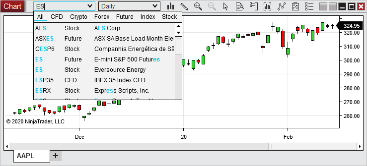
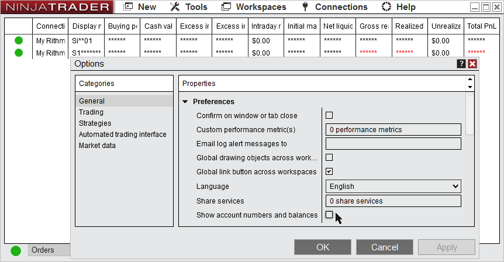
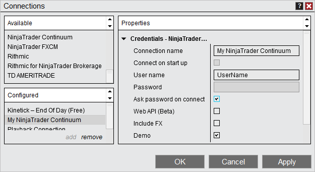
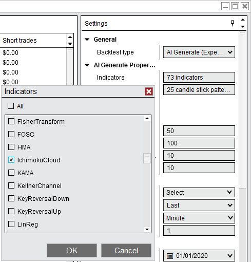
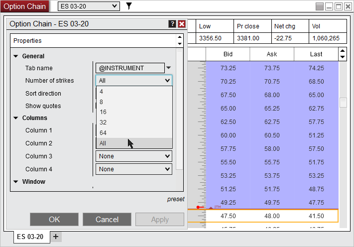
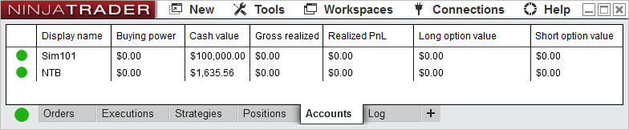

|
<< Click to Display Table of Contents >> 8.0.21.1 |


|
8.0.21.1
|
<< Click to Display Table of Contents >> 8.0.21.1 |
|
8.0.21.1 Release Date
March 23, 2020
Issue# |
Status |
Category |
Comments |
14376 |
Fixed |
Chart |
Some combinations of tick chart values and data series resulted in a crash |
14088 |
Fixed |
Market Analyzer |
Resolved some scenarios where Net Change columns showed incorrect values |
14356 |
Fixed |
Rithmic |
Could not connect to Rithmic US West System |
8.0.21.0 Release Date
February 25, 2020
Features |
Added a quick search enhancement to the instrument selector Instruments Feature #13754
The new quick search shows instant results to quickly look for and change instruments without having to open a search.
 |
Added 'Show account numbers and balances' setting which can be disabled to hide these values Account Data, Options Feature #13492
Private account values can now be hidden from view by unchecking the 'Show account number and balances' property. This gives the ability to have additional privacy when sharing your screen or using NinjaTrader around others.
 |
Added setting to always 'Ask password on connect' Connections Feature #13057
Enabling 'Ask password on connect' will make it so your account password is not saved and the password will need to be manually entered each time you connect.
 |
Enhanced AI Generate for use with third party indicators Strategy Analyzer Feature #13928
The AI Generate feature has now been expanded to allow the use of 3rd party single series indicators
 |
Expanded 'Number of strikes' settings to include '64' and 'All' Option Chain Feature #14235
Additional settings have been added to allow additional levels of strikes to view.
 |
Added Short Option Value and Long Option Value columns to Accounts tab Account Data Feature #14231
Long/Short option values can now be displayed within the Accounts tab by right clicking on the Accounts grid, selecting Properties, and checking Long option value and/or Short option value.
 |
NinjaTrader Brokerage customers now can view account Initial, Intraday and Net Liquidation account values Continuum, Account Data Feature #13657
Multiple account data values (Unrealized PnL, Initial Margin, Excess Initial Margin, Intraday Margin, Excess Intraday Margin, Net Liquidation) will now be calculated and displayed for NinjaTrader brokerage customers using the NinjaTrader Continuum connection.
Note: If upgrading NinjaTrader the database must be reset to access these account values. |
Added support for PnL currency conversion of the Hong Kong Dollar Account Data Feature #13799
When trading instruments that have the Hong Kong Dollar currency (such as the HSI & MHI), the PnL will now convert to the accounts denomination |
Major improvements on Spanish translations Localization Feature #14189
Added improvements to Spanish translations to provide a more complete experience for Spanish speaking clients. |
Issue# |
Status |
Category |
Comments |
14035 |
Fixed |
Account Data |
Resolved a scenario where partially filled orders were not properly reflected |
14266 |
Fixed |
Alerts |
Active alerts pop up warning could show after the workspace was already closed |
14303 |
Fixed |
Alerts, Orders |
When enabling an alert which submitted a market order it could send an order both when selecting Apply and Ok |
14304 |
Fixed |
Alerts, Orders |
Order Submitted as part of an alert could get stuck in a submitted state |
14240 |
Fixed |
ATM Strategies |
ATM Strategy which used a Simulated Stop failed to close |
14243 |
Fixed |
ATM Strategies, Orders |
Native OCO orders could get multiple cancel requests, resulting in an error |
14262 |
Fixed |
Bars |
Reloading bars could intermittently result in a crash |
14207 |
Fixed |
Chart |
Go To function on live charts did not function correctly with secondary data series applied |
14260 |
Fixed |
Chart |
Indicator plot justification set to Overlay could be moved out of visual range |
14325 |
Fixed |
Chart |
Scrolling to the first bar on the chart then compressing the time axis caused the chart to lose the ability to click and drag |
14209 |
Fixed |
Chart, Indicator |
Copied indicators shared the same Z-order level |
14222 |
Fixed |
Code Wizard, NinjaScript |
New scripts could be named with existing NinjaScript names, resulting in an error |
14088 |
Fixed |
Continuum, CQG, Market Analyzer |
Net change columns displayed incorrectly with WebAPI |
14297 |
Fixed |
Continuum, CQG, Orders |
WebAPI OCO orders when modified could incorrectly show an unknown order message |
14261 |
Fixed |
CQG, Strategy, Orders |
High frequency order changes could result in an error |
14288 |
Fixed |
cTrader |
cTrader instruments in database could have wrong trading hours |
14285 |
Fixed |
Data |
Preferred connection setting for options was not working |
14216 |
Fixed |
DrawingTool |
Trend Channel snapping after modification resulted in Y values rounded to an unexpected price |
14310 |
Fixed |
DrawingTool |
Applying a template to a drawing object placed by a script set DrawnBy property to null |
14302 |
Fixed |
DrawingTool, Alerts |
Arc drawing tool was incorrectly set to not support alerts |
14244 |
Fixed |
DrawingTool, Chart |
Drawing objects did not appear in drawing object window if panel was scaled opposite |
14245 |
Fixed |
DrawingTool, Chart |
Resolved an error that could occur when left, right, then left clicking once again on a drawing object |
14220 |
Fixed |
DrawingTool, Workspaces |
Existing Region Highlight Y Drawing Objects disappeared when set as global |
14290 |
Fixed |
FXCM, Orders |
A rejected order change that was then changed again before the error came in would get stuck in pending |
14269 |
Fixed |
Indicator, DrawingTool |
Multi series indicator which draws global drawing objects could have duplicate objects when applied to another chart with a different instrument |
14099 |
Changed |
Installer |
Updated the error received when a database is for a newer version than what is installed |
14229 |
Fixed |
Interactive Brokers |
Orders submitted from Traders Workstation would not cancel in NinjaTrader |
14233 |
Fixed |
Interactive Brokers |
Could not connect if there was a working order submitted from Traders Workstation |
14249 |
Fixed |
Interactive Brokers |
A position on N225 displayed with the wrong expiry |
14293 |
Fixed |
Interactive Brokers |
A forced disconnect could still show as connected |
14201 |
Fixed |
Interactive Brokers, Data |
Stocks traded on the Bolsa de Madrid exchange would not get data |
14212 |
Fixed |
Interactive Brokers, Orders |
Flatten everything when used with option positions was unable to close the option position |
14253 |
Fixed |
Interactive Brokers, Orders |
Option orders could get a rejection |
14204 |
Fixed |
IQFeed |
Resolved a scenario where a lost connection resulted in a crash |
14205 |
Fixed |
IQFeed |
Last Price did not update after disconnecting then reconnecting |
14241 |
Fixed |
Market Analyzer |
An error occurred when selecting an instrument after adding it to a blank row |
14202 |
Fixed |
NinjaScript |
RemoveDrawObject did not work historically |
14218 |
Fixed |
NinjaScript |
Split Entries did not have fully protected position when strategy was re-enabled with ImmediatelySubmit |
14256 |
Fixed |
NinjaScript |
Resolved a scenario where removing a drawing tool placed by an indicator removed the indicator when it shouldn't |
14265 |
Fixed |
NinjaScript |
Removing plots from an indicator applied to an unopened workspace locked up the chart when opening the workspace |
14284 |
Fixed |
NinjaScript |
Using the TrendLine indicator in a strategy could result in an error |
14238 |
Fixed |
Option Chain |
Option Chain did not rollover |
14219 |
Fixed |
Option Chain, Kinetick |
Option Chain could get an error when disconnecting from Kinetick End Of Day (Free) |
14226 |
Fixed |
Order Flow + |
Volumetric bars delta percent statistic with positive values could have no color gradient |
14250 |
Fixed |
Order Flow + |
Order Flow Volume Profile would not plot the profile until time since the session started was greater than data series interval |
14267 |
Fixed |
Order Flow + |
Resolved a scenario where Order Flow Volume Profile got an OnBarUpdate error |
14317 |
Fixed |
Playback, Alerts |
Alert rearm seconds was not respected when connected to Playback |
13788 |
Fixed |
Playback, NinjaScript |
Resolved a scenario where resource heavy scripts could cause Playback to stop updating |
14177 |
Fixed |
Playback, NinjaScript |
Historical data for added series was not loading when connected to Playback |
14274 |
Fixed |
Playback, Strategy |
Enabling a strategy which uses ExitOnSessionClose and ImmediatleySubmit did no close historical position when expected |
14300 |
Fixed |
Rithmic |
Could not connect to Rithmic 01 (Singapore) system |
14254 |
Fixed |
Strategy |
When loading a template, then loading another template, the original template value stayed applied |
13582 |
Fixed |
Strategy Analyzer |
Back tests using High Order Fill Resolution of 1 tick could see positive slippage |
14307 |
Changed |
Strategy Analyzer |
Removed tool tip timeout |
14197 |
Fixed |
Strategy Analyzer |
An error occurred when restoring Strategy Analyzer with AI Generate selected |
14221 |
Fixed |
Strategy Analyzer |
AddChartIndicator() could fail for AI generated script containing CandleStickPattern |
14248 |
Fixed |
Strategy Analyzer |
When optimizing a strategy that uses enums, if you compile before a test with the strategy selected in the optimizer, it no longer iterates the enums |
14268 |
Fixed |
Strategy Analyzer |
Incorrect error showed when there were too many parameters to optimize |
14270 |
Fixed |
Strategy Analyzer |
AI generated strategy generated MovingAverageRibbon code incorrectly, causing compile errors |
14282 |
Fixed |
Strategy Analyzer |
An out of focus Strategy Analyzer chart could go transparent |
14320 |
Fixed |
Strategy Analyzer, Chart |
Trading template applied to a backtest was not applied to a chart spawned from Executions/Trades send to Chart |
14182 |
Fixed |
Strategy Builder |
Custom series named after an indicator caused a crash |
14186 |
Fixed |
Strategy Builder |
Custom Series name used in Action could be changed, causing compile errors |
14279 |
Fixed |
Strategy Builder |
ExitOnSessionCloseSeconds could be left blank, resulting in compile errors |
14315 |
Fixed |
Strategy Builder |
Variables could incorrectly be named slippage, resulting in an error |
14309 |
Fixed |
SuperDOM |
The X to cancel all bid or ask orders showed when no account was selected |
14273 |
Changed |
TD Ameritrade |
Order submit wait time was increased to reduce timeouts |
14252 |
Fixed |
TD Ameritrade |
Ticks came in with incorrect time stamps when time zone was set to UTC |
14203 |
Fixed |
TD Ameritrade, Data |
Some custom instruments would not load historical data |
14305 |
Fixed |
TD Ameritrade, Hot Key, Orders |
Placing orders with Hot Keys could unexpectedly get overbought/oversold errors |
14247 |
Fixed |
TD Ameritrade, Orders |
An error could occur when canceling orders with a TIF or DAY |
14257 |
Fixed |
TD Ameritrade, Strategy |
Resolved a scenario where a market order would get an error |
14228 |
Fixed |
Workspaces |
Resolved a scenario where loading a workspace and closing a chart before it loaded resulted in an error |